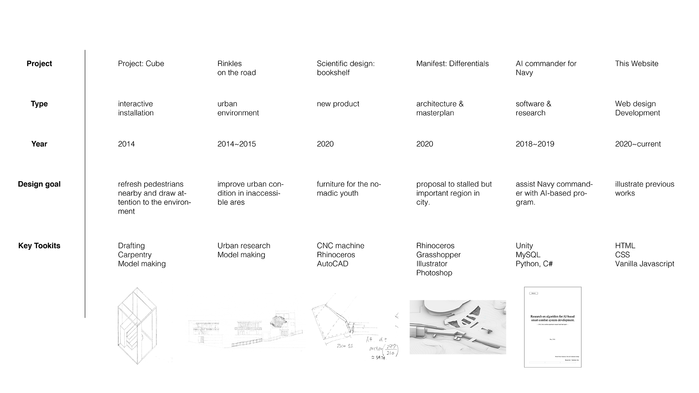
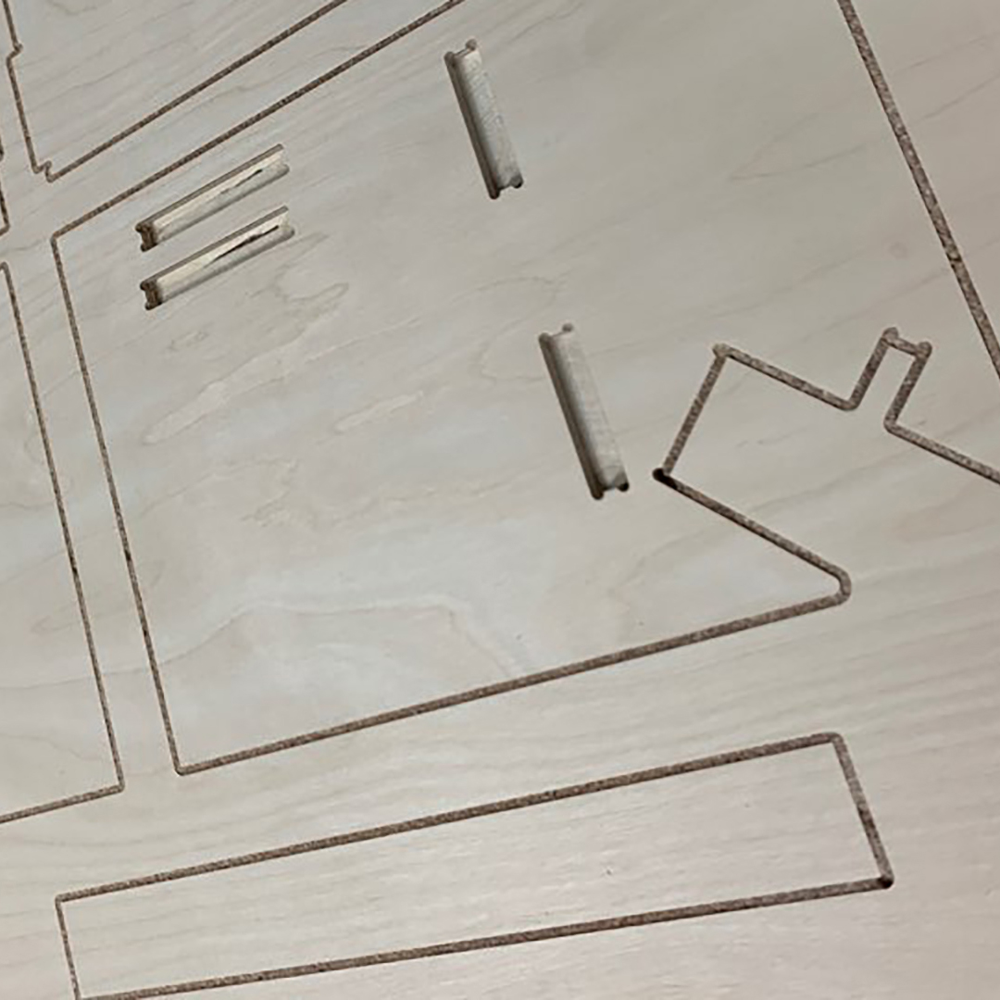
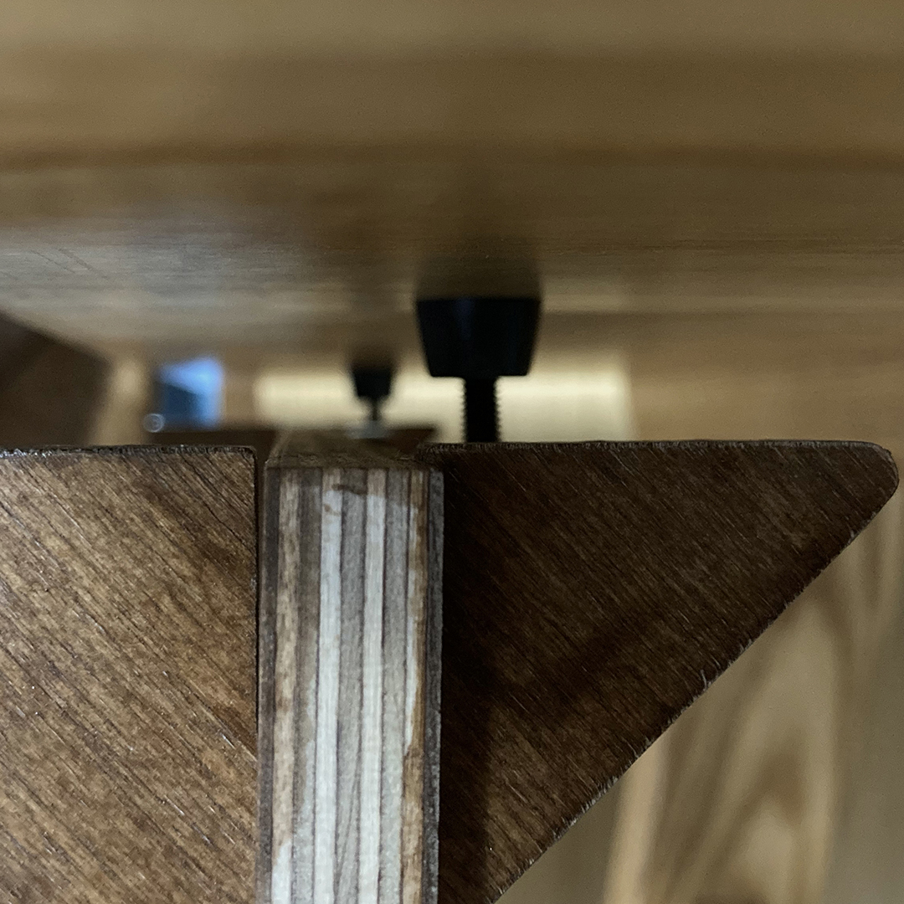
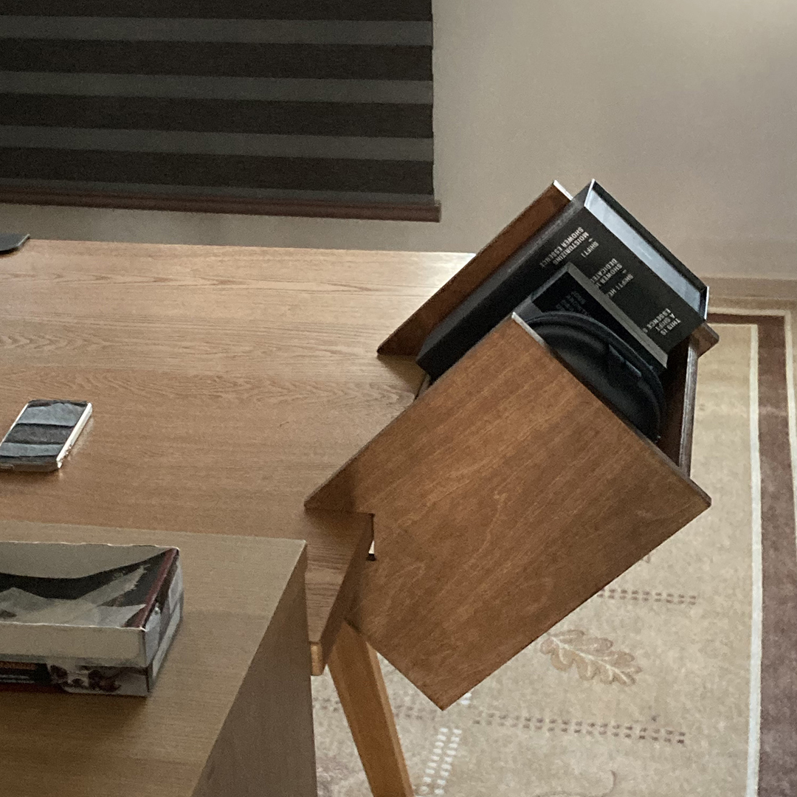

I'm Junho Lee.
Engineering, Architecture, Scripting enthusiast



CNC cut

Adaptable parts

Crowd-funded Q1 2021

HTML
<body class="black-theme before-load black-sidebar">
<div class="loading">
<h1>Hello, page is loaded, please wait :)<br> It may take up to several minutes.</h1>
<svg class="loading-circle">
<circle cx="50%" cy="50%" r="25"></circle>
</svg>
</div>
<!-- Icon Bar (Sidebar - hidden on small screens) -->
<div class="progress_bar horizontal"></div>
<nav class="vertical-sidebar">
<ul>
<li id="n0">
<a href="#s0" >Junho's Portfolio</a>
</li>
<li id="n1">
<a href="#s1" class="bar-item">Project:Cube</a>
<div class="sub">
<div class="menu-pin"></div>
<ul class="submenu">
<li><pre>2014
Installation
Woodwork
Role : main-designer</pre></li>
<li class="descriptionA">
An installation that vitilize people's everyday life. <br>
Students of SNU often forget how nice envirornemnt they are surrounded by. This project is proposed to give people a chance to feel the environment in their busy lives.
</li>
<li class="descriptionB">
The project was installed on the SNU campus.
The main goal of the project was to deliver the essence of the of the wardrobe into an installation
</li>
<li class="descriptionC">
Before installation, since there was only little time was given at the installtion site, 1/20 scale model was made in order to consider realistic aspects that might be omitted.
</li>
<li class="descriptionD">
The most significant aspect of this project is that all the details such as, location of screws, installation process, maximum weight, interference of connecting part were considered prior to installation.</li>
</ul>
</div>
</li>
<li id="n2">
<a href="#s2" class="bar-item">Village Project</a>
<div class="sub">
<div class="menu-pin"></div>
<ul class="submenu">
<li><pre>2014~2015
Urban Design
Drafting, Model making
Role : main-designer</pre></li>
<li class="descriptionA"> Problems in Seoul City<br><br>
1. Since there are lots of mountains, old people are difficult to go up the hill.<br><br>
2. The roads are curvy, so it's dangerous where people and vehicles met.
</li>
<li class="descriptionB">
To solve these problems, I designed wrinkles on a road that could slow down cars and could be a resting place to people.
</li>
<li class="descriptionC">
This project will also brought positive impact to gloomy neighborhood after decline of clothing industry.
</li>
</ul>
</div>
</li>
<li id="n3">
<a href="#s3" class="bar-item">Daily design:bookshelf</a>
<div class="sub">
<div class="menu-pin"></div>
<ul class="submenu">
<li><pre>2020
Furniture design
Rhino(3D), CNC, Mechanics
Role : main-designer</pre></li>
<li class="descriptionA">Problems which young Koreans are facing :<br><br> 1. They live in a small rooms(about 15 sqm), even though they spend most of the time in front of their desk (even more due to COVID-19), they have no space to place fancy bookshelf.<br><br> 2. Since they move in frequently to rented house, so it should be easy to assemble and disassemble. <br><br> 3. It is often the case that desk belongs to houseowner.
</li>
<li class="descriptionB">
To make furniture without metal joints, all parts should be perfectly cut. Therefore, I used CNC machine to minimize the errors.<br> The peripheral part that touches the desk is adjustable, so it could adapat various desks. <br> This project will be launched in crowdfunding in the first quarter of 2021. </li>
</ul>
</div>
</li>
<li id="n4">
<a href="#s4" class="bar-item">Manifest:Differentials</a>
<div class="sub">
<div class="menu-pin"></div>
<ul class="submenu">
<li><pre>2020
Architectural Design
Rhino+Grasshopper, Illustrator
Role : main-designer</pre></li>
<li class="descriptionA"> In this project, I want to suggest the connection among the area nearby the SNU main gate in masterplan and architecture scale.
</li>
<li class="descriptionB">
Currently there is no connection between SNU main gate station which will be built soon and University. So, I focused on the path between and experience on the path. Shapes are designed to hint the direction of the possible path and other regions to maximize the experience on path.
</li>
<li class="descriptionC">
This was possible and dealing with design was effective because I considered the variables lies beyond the physical world. Unlike the art , Architecture can only occupy finite amount of space. That is the reason I strongly argue that architecture, physical building has to be a result of rigorous logics, Which I called a method of 'differential equation'.
</li>
<li class="descriptionD">
</ul>
</div>
</li>
<li id="n5">
<a href="#s5" class="bar-item">AI Commander for Navy</a>
<div class="sub">
<div class="menu-pin"></div>
<ul class="submenu">
<li><pre>2018~2019
Software Development
Python, MySQL, C#, Unity
Role : Developer</pre></li>
<li class="descriptionA"> This project was to develop decision-assist program based on machine learning. It was research task given by ROK Navy. The CEO of Sentience Inc. and me developed it together.
<br> I was responsible for all development process, from the structure of whole program and to the implementation.
</li>
<li class="descriptionB">
This is the structure of the whole system. Since it is project given by Navy, please understand I cannot give specific details. In the system, tools such as Database(MySQL), Programming from both client and server side(Python) and rendering and computation(Unity) were used.
</li>
<li class="descriptionC">This is the running screen of the program.</li>
</ul>
</div>
</li>
<li id="n6">
<a href="#s6" class="bar-item">This website</a>
<div class="sub">
<div class="menu-pin"></div>
<ul class="submenu">
<li><pre>2020 ~ Current
Web design, development, publish
HTML, CSS, Javascript
Role : Frontend and Backend designer</pre></li>
<li class="descriptionA"> I believe the way that illustrates an idea is as important as the idea itself.
Therefore, a designer is responsible for visualize the results. </li>
<li class="descriptionB"> In this context, I developed this whole website from the ground. I didn't use any kind of pre-defined website building tools, such as <span style="text-decoration:line-through;">wix, wordpress, and even bootstrap or jquery.</span> </li>
</ul>
</div>
</li>
</ul>
</nav>
<!-- Page Content -->
<div class="container"> <!-- whole body container -->
<section class="scroll-section" id="s0">
<div class="title sticky-elem"><h1 id="title-message"><span>I'm Junho Lee.</span></h1>
<h3 class="subMessage">Engineering, Architecture, Scripting enthusiast</h3></div>
<div class="subsection sub1">
<img src="img/5-1/for masterplan axon.jpg" alt="meta_car" class="horizontal-image">
</div>
<div class="subsection sub2">
<img src="img/website/skills_table_2.png" alt="skillstable" class="horizontal-image">
</div>
</section>
CSS
#show-scene-0 #s0 .sticky-elem,
#show-scene-1 #s1 .sticky-elem,
#show-scene-2 #s2 .sticky-elem,
#show-scene-3 #s3 .sticky-elem,
#show-scene-4 #s4 .sticky-elem,
#show-scene-5 #s5 .sticky-elem,
#show-scene-6 #s6 .sticky-elem
{
display:block;
}
/*temp*/
#show-scene-5 #s5 img{
display:block;
}
#show-scene-1 #n1,
#show-scene-2 #n2,
#show-scene-3 #n3,
#show-scene-4 #n4,
#show-scene-5 #n5,
#show-scene-6 #n6{
color:black;
font-weight:500;
}
.black-sidebar#show-scene-1 #n1 .bar-item,
.black-sidebar#show-scene-2 #n2 .bar-item,
.black-sidebar#show-scene-3 #n3 .bar-item,
.black-sidebar#show-scene-4 #n4 .bar-item,
.black-sidebar#show-scene-5 #n5 .bar-item,
.black-sidebar#show-scene-6 #n6 .bar-item
{
color:white;
}
#show-scene-6 .codes{
display:flex;
}
#show-scene-1 #n1 .sub,
#show-scene-2 #n2 .sub,
#show-scene-3 #n3 .sub,
#show-scene-4 #n4 .sub,
#show-scene-5 #n5 .sub,
#show-scene-6 #n6 .sub{
display:flex;
height:60vh;
}
#force_show{
display:block;
}
.non-first{
opacity:0;
}
.sticky-elem{
display:none;
position:fixed;
}
.sticky-elem-canvas{
top:0;
height:100vh;
width:100vw;
left: 140px;
/* background:#777;*/
}
.sticky-elem-canvas canvas{
/* 이 위에 absolute, relative obj있으면 안됨*/
position:absolute;
top: 50%;
left: 50%;
}
#long-canvas{
top:0;
transform-origin: top center;
}
#s6 .image-canvas-1{
top:0;
transform-origin: top center;
}
.main-message{
z-index:11;
text-align: center;
}
.message{
z-index:11;
padding:0.5rem 1rem;
color:white;
top:50%;
left:50%;
}
.messageA{
display:none;
color:rgb(125,125,125);
top:1vh;
left:50;
transform:translateX(140px);
transition: color 1s;
}
canvas{
}
.pin {
width: 1px;
height: 100px;
background: white;
transition: transform 0.2s;
position:relative;
}
.menu-pin {
width: 1px;
height: 60vh;
top:0;
left:1.2rem;
margin:0;
background: black;
transition: transform 0.2s;
transform-origin:top;
position:relative;
}
Javascript
function playAnimation(){
const values=sceneInfo[currentScene].values;
const objs=sceneInfo[currentScene].objs;
const currentYOffset=yOffset-prevScrollHeight;
const scrollHeight=sceneInfo[currentScene].scrollHeight;
const scrollRatio= currentYOffset/scrollHeight;
switch(currentScene){
case 0:
objs.body.style.background= `rgba(0,0,0,${calcValues(values.white_theme_out,currentYOffset)})`;
if(scrollRatio<=0.3){
for(i=0;i<objs.barItems.length;i++){
objs.barItems[i].style.height=`1.2rem`;
}
}else if(scrollRatio<=0.8){
for(i=0;i<objs.barItems.length;i++){
objs.barItems[i].style.height=`10vh`;
}
}else{
for(i=0;i<objs.barItems.length;i++){
objs.barItems[i].style.height=`1.2rem`;
}
}
if(scrollRatio<=0.45){
objs.subMessage.innerHTML="Engineering, Architecture, Scripting enthusiast";
}else{
objs.subMessage.innerHTML="These are the projects / skillsets will be shown on this website.";
}
if(scrollRatio<=0.5){
objs.title.style.opacity=1;
}else{
objs.title.style.opacity=calcValues(values.title_opacity_out,currentYOffset);
}
if(currentYOffset>=window.innerHeight){
objs.title.style.position="absolute";
objs.title.style.top=`${window.innerHeight+43}px`;
}else{
objs.title.classList.add('sticky-elem');
objs.title.style.position="fixed";
objs.title.style.top=`${43}px`;
}
if(scrollRatio<0.9){
objs.sidebar.style.display='none';
}else{
objs.sidebar.style.display='block';
}
break;